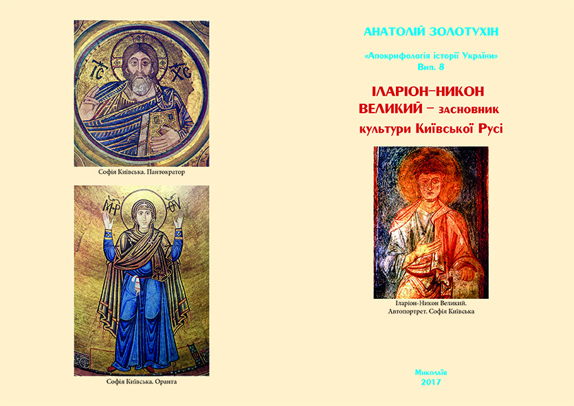
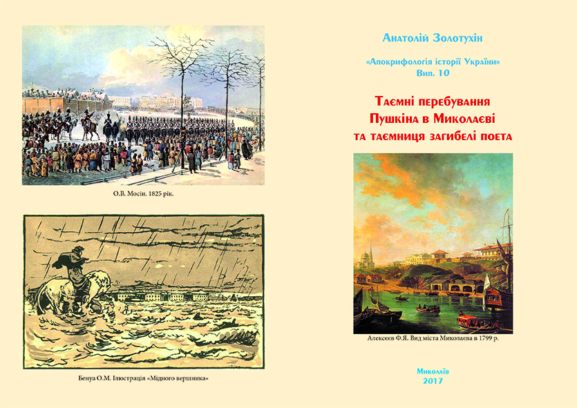

Order books and you will learn that:
- Cimmerian-Aryan Atlantis was near Yevpatoria in Crimea. It was the first European country shipwreck and died in the explosion of the volcano of Santorini in 1447 BC!
- According to Homer (Plato) priests, 4 days before the destruction of Atlantis warned residents. 10 families of 10 ships escaped and sleep-shafts Alibant in the city (Mykolaiv). The city Alibant excavated, archaeology monument at the location called “Wild Garden”.
- Founder kind Cimmerian Scythian king Targitay Cleobulina his wife (daughter of Zoroaster and the daughter of the Phoenician King Cadmus) in 753 BC on Mykolaiv peninsula at the modern built the first three cities Olbia-1, Boreas and Neeson.
- The founders of the Antiquity were not Greeks and well-child Cimmerian-Atlanteans and Zoroaster, who born in Olbia-1 (The camp-field of Mykolaiv), they have built 10 cities in Scythia, and in Greece – 4
- Christ by his father was a descendant of the founders of ancient culture and October 8, 28 AD visited the ancestral land in Olbia-1 (Mykolaiv)!
- Founder of Kievan Rus Rurik the Great was born in Turov of Slavic Princess Valentina I. was not Scandinavian!
- The founder of the culture of Kievan Rus was Ilarion-Nikon Greatly son Vladimir and grandson of Roman and Byzantine emperors!
- The world’s first opera “Lay” was written and attitudes in Kiev Cyril 400 years of Italian!
- So Ukrainian – are descendants of Atlantis! Ukraine Small emblem – a trident of Poseidon chief god of the Atlanteans! Seaman and oligarch Aristey of Prokonesus wore herring and built in 675 BC. Prokonesus walled city (“Chub, or herring”), which was the emblem of the trident!
Because of the small edition (200 copies) book is distributed in a block of 10 issues on the Application. Nonresident books delivered by mail shipping payment. For those who do not have time to buy books, accepting applications for the next print edition.
Applications submitted for publishing on Irene Olexandrovna Gudym,
E-mail: irina.gudym@gmail.com
Mob. tel. +380930403465
10 issues of the “Apocryphology of the History of Ukraine” series:
- Cimmerian king – Aristeas of Proconessus – the founder of the ancient Culture!

- Cimmerian queen – Cleopatra – Muse of the founders of ancient culture!

- Cimmerian king – Homer – the founder of ancient culture!

- Cimmerian king – Achilles – Admiral of the fleet – Hero of Hellas!

- Kimmer-Scythian king – Gil-Skyth – sings, Olympian and bard of Hellas!

- Scythian king – Anakharsys – sage of Hellas and the founder of Chersonesos!

- Apocryphology of Jesus Christ

- Ilarion-Nikon the Great – the founder of the culture of Kievan Rus!
- “The Lay of Igor’s Host” by Kiril Turovsky as the first opera!

- Secret visits of Pushkin to Mykolaiv and the mystery of the poet’s death
{kind=link}
{kind=link}